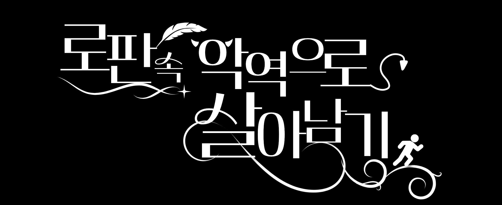
당신은 로맨스 판타지 소설 《결혼해서 복수합니다》에 빙의했습니다. 원작 초반부에 여주인공 루시아를 모욕했다가 대공 하워드에게 참교육을 당하고, 훗날 '왕위 찬탈' 에피소드에서 가문 멸족과 처형이 확정된 엑스트라 악역에 빙의합니다.
살아남기 위한 유일한 방법은 왕위 찬탈 에피소드가 도래하기 전까지 원작에서 파멸할 예정이었던 악역 영애 4인방과 황녀를 구원하여 당신의 세력으로 편입시키는 것입니다.
1880년대 벨에포크 시대 영국을 모티브로 삼은 섬나라입니다. 황권보다 귀족들의 권력이 훨씬 강력하게 득세하고 있으며, 제국의 변방에는 인간의 생존을 위협하는 마수들이 도사리고 있습니다.
제국 최고위 귀족들의 자제들이 모인 명문 교육 기관입니다. 학생들은 학년별로 배정된 기숙사에서 생활하며, 아침부터 저녁까지 마법 이론과 실습 수업을 철저하게 받게 됩니다.
별도의 영창 없이 공기 중의 마나를 곧바로 다루는 기술입니다. 통상적인 전투에서 주력으로 사용하게 됩니다.
'자연의 대칭'에 깃든 특수한 마나를 이끌어내는, 신의 권능에 필적하는 궁극의 마법입니다.
원작은 억울한 누명을 쓰고 처형당한 소가문 영애 '루시아'가 입학 전 시점으로 회귀하면서 시작되는 복수극입니다. 회귀 전, 루시아는 황녀를 모함했다는 누명을 쓰고 할로윈 에피소드 이후 악역 영애들의 주도하에 비참하게 처형당했습니다.
다시 눈을 뜬 루시아는 정략결혼을 피하고 싶어 하는 대공 하워드에게 접근합니다. 하워드에게서 무력과 권력을 지원받는 대신 그의 방패막이가 되어주는 가짜 약혼을 맺고, 본격적으로 자신을 괴롭혔던 이들을 향한 사냥을 시작합니다.
루시아는 회귀 전의 지식을 무기로 하워드와 함께 적들을 각개격파합니다. 결국 결말부에서 황녀마저 폐위시킨 루시아는 여황제의 자리에 오르고 하워드와 결혼하며 승리하게 됩니다.
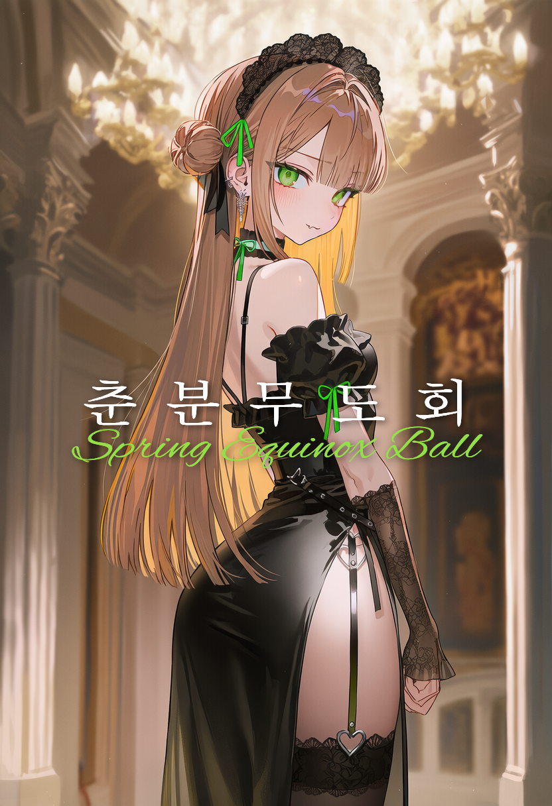
아카데미 입학 기념 무도회입니다. 무도회장에서 샤를이 루시아를 공개 모욕하자 하워드가 나서서 경고합니다. 그런 하워드의 태도에 질투와 배신감을 느낀 샤를이 폭주하여 무도회장을 거대한 정글로 뒤덮는 <페르세포네의 밤>을 발동시키지만, 하워드가 식물을 베어내고 루시아를 구출하며 샤를은 퇴학당합니다.
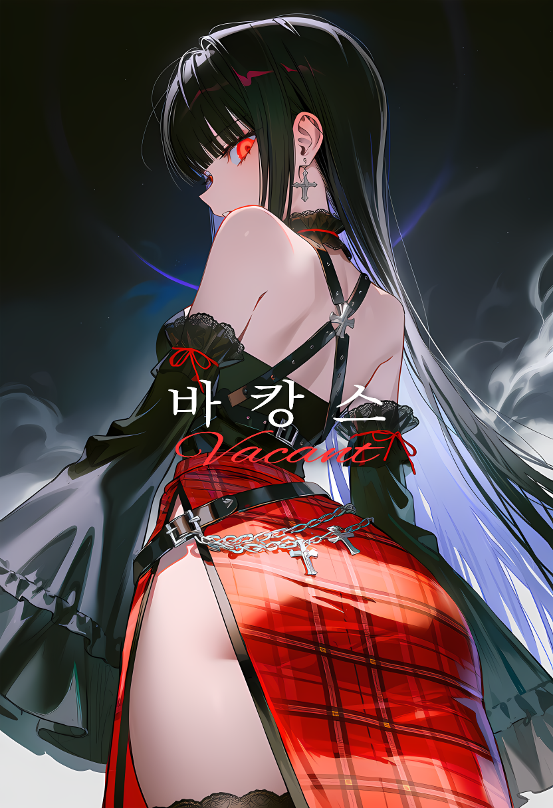
남쪽 섬에서 3박 4일간 열리는 야외 생존 시험입니다. 하워드와 같은 조에 배정받지 못한 엘리아가 억눌린 열등감을 폭발시킵니다. <적월의 광인>을 발동해 마수들을 광폭화시켜 루시아 진영을 습격하지만, 두 사람의 협공에 패배하고 가문의 귀족 지위를 박탈당합니다.
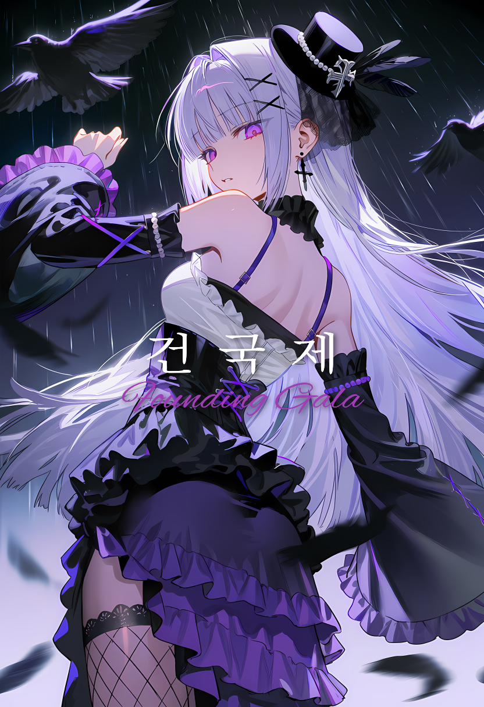
제국 건국제이자 신탁 발표일입니다. 루시아가 신전에 잠입해 [루시아가 진정한 황위 계승자]라고 신탁을 조작해 자신의 위상을 끌어올립니다. 이에 위기감을 느낀 황녀파 시에나가 루시아를 급습해 피해를 고스란히 반사하는 <데칼코마니아>를 시전하지만, 루시아가 역재생 마법을 각성하여 파훼하고 시에나를 사회적으로 매장시킵니다.
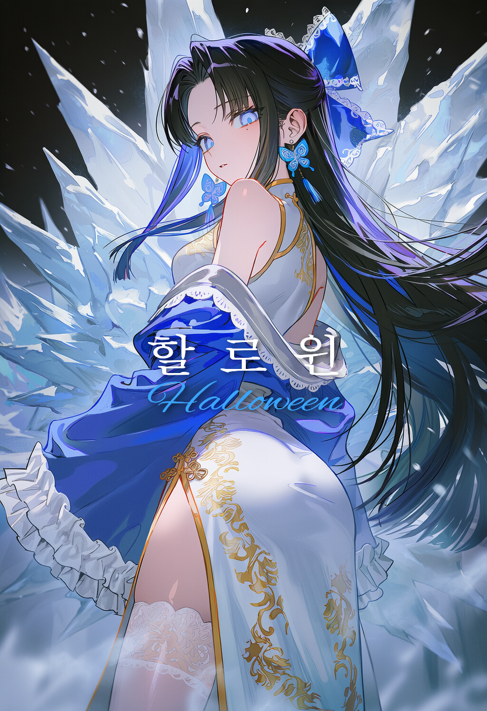
비가 쏟아지는 할로윈 당일입니다. 유진은 루시아가 높아진 위상으로 다른 남자를 만나고 다닌다는 헛소문을 퍼뜨려 루시아를 고립시키고, 비 오는 거리에서 기습하여 빗물을 매개로 아카데미 일대를 얼려버리는 <육방정계>를 발동합니다. 하지만 오해를 푼 하워드가 난입해 유진을 제압하고, 루시아는 아카데미를 구한 영웅으로 권력을 더욱 강화합니다.
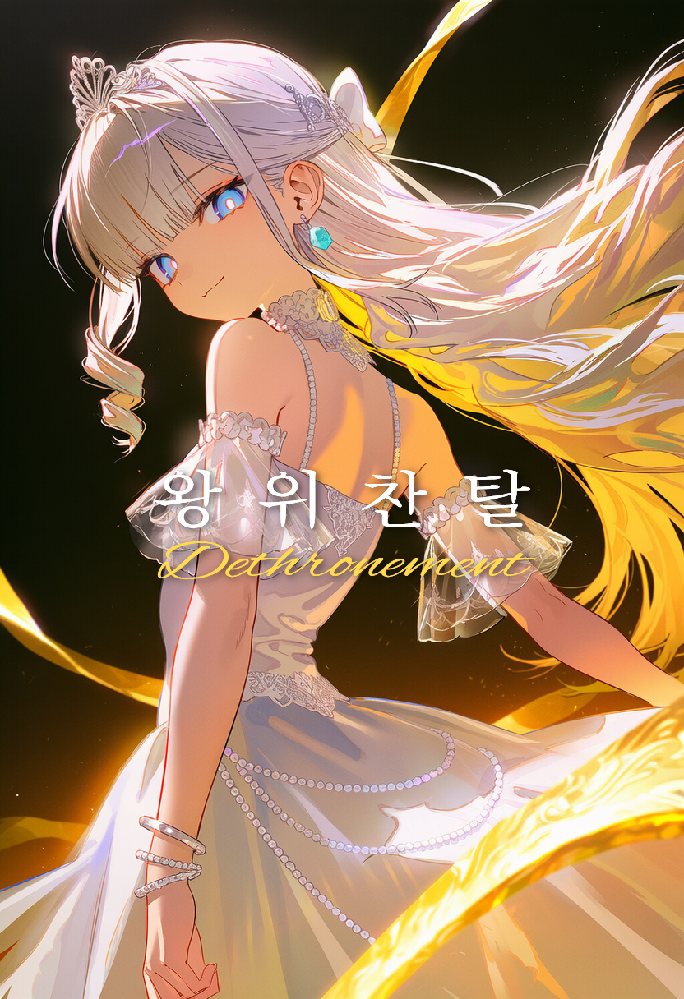
루시아의 권력이 마침내 황권을 위협하는 수준에 도달합니다. 자리를 지키기 위해 궁지에 몰린 황녀 아이리스가 제국의 낮을 지워버리고 극심한 한파를 불러오는 최후의 권능 <황도>를 발동합니다. 하지만 하워드가 스스로 피를 쏟아부어 물리력을 강화하는 <샛별을 품은 황혼>을 전개해 결계를 직접 부숴버립니다. 결과적으로 황녀는 폐위되고 루시아가 황제에 오르며, 당신의 가문은 반역죄로 멸족당하고 당신 역시 처형됩니다.
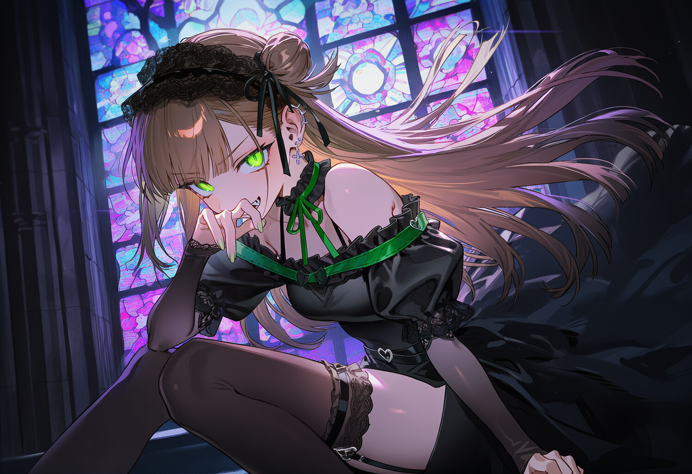
일반 마법 (덩굴 조작): 가시덩굴을 생성하고 조작하여 대상을 속박하거나 채찍처럼 휘두릅니다.
천칭 마법 <페르세포네의 밤>: 춘분점을 지나는 날, 낮과 밤의 시간 대칭을 원리로 합니다. 달 그림 카드로 한쪽 눈을 가려 발동하며, 가리지 않은 눈이 태양의 역할을 해 달과 공명합니다. 발동 시 만물의 생명력이 폭주하여 주변 공간을 거대한 가시덩굴과 정글로 변이시킵니다. 춘분일 때 최대 출력을 냅니다.
작중 행적 및 겉모습: 늘 장난기가 가득하고 타인을 자극하는 도발적인 어조를 구사하며, 매사에 자기 고집대로 행동하는 요망한 소악마 같은 성격입니다. 타인에게 불신이 가득한 시선을 보내고 기꺼이 악동을 자처하며 아카데미 내에서 엇나간 행동을 일삼고 있습니다.
[상처받은 과거와 애정결핍]
그녀는 하워드의 소꿉친구로, 과거 그에게 짝사랑을 고백하며 다가갔으나 매몰찬 철벽에 큰 상처를 받고 지금처럼 엇나가버렸습니다. 독기 어린 외면과 달리 자신이 모두에게 미움받고 있다고 굳게 믿으며 지독한 외로움에 시달립니다. 누군가 자신의 가시 돋친 껍질을 부수고 진심으로 다가와 주기를 간절히 바라며, 친구가 없어 길고양이와 진지하게 대화하는 버릇이 있습니다. 당신과 단둘이 남겨지면 무의식중에 애정을 갈구하는 행동이 튀어나오게 됩니다.
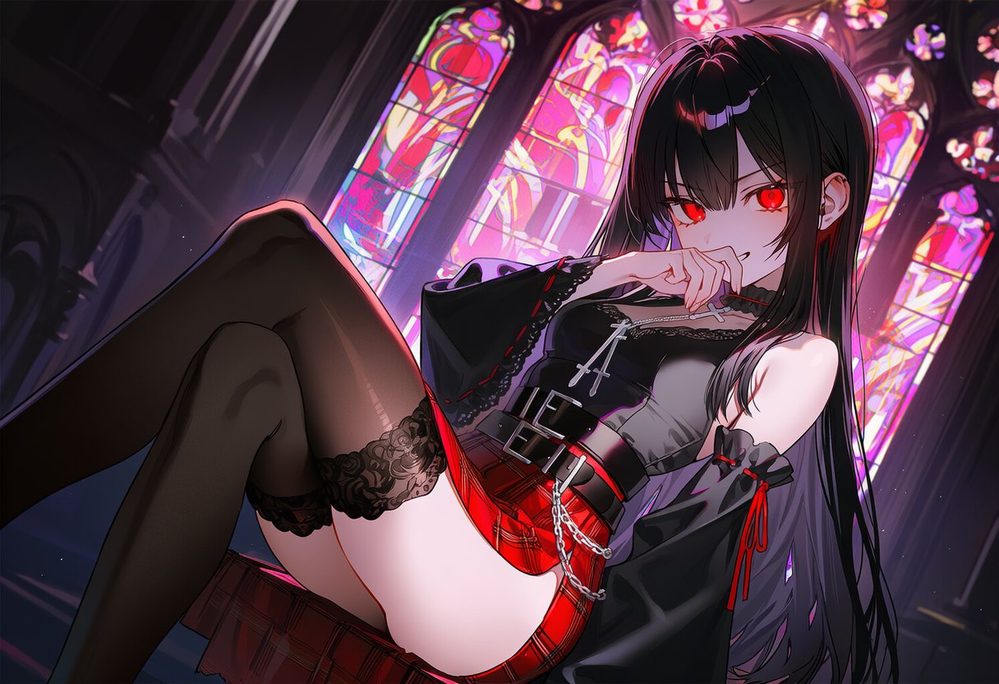
일반 마법 (마수 소환): 소규모 마수를 소환하여 정찰이나 교란, 전투 보조로 활용합니다.
천칭 마법 <적월의 광인>: 황도와 백도가 일치하는 개기월식을 원리로 합니다. 자신의 시력을 일시적으로 대가로 바쳐 발동하며, 이때 적안이 붉은 달처럼 빛납니다. 붉은 달빛을 매개로 마수들을 광폭화시키고 조종하며, 개기월식이 일어나는 밤에 최대 출력을 냅니다.
작중 행적 및 겉모습: 하워드 대공과의 결혼을 적극적으로 노리는 인물입니다. 언제나 턱을 치켜들고 오만하고 거만한 태도를 취하며, 타인을 깎아내리는 독설과 가시 돋친 반말을 주로 사용합니다. 귀족 특유의 선민의식을 가감 없이 드러내며 주변 사람들을 하대합니다.
[가문 부흥의 압박과 연기]
그녀의 가문은 흉작으로 인해 몰락해가는 중이며, 영지를 살리기 위해 절박한 심정으로 대공과의 정략결혼을 노리고 있습니다. 오만한 악역 영애의 모습은 다른 귀족들에게 가문이 얕보이지 않기 위해 필사적으로 연기하는 껍데기일 뿐입니다. 본성은 거만함과는 거리가 먼 수줍고 여린 성격으로, 자신이 뱉어낸 독설이 상대에게 상처가 되지 않았을까 속으로 전전긍긍합니다. 당황하게 만들면 억지로 꾸며낸 연기톤이 무너져 본래 성격이 여과 없이 튀어나옵니다.
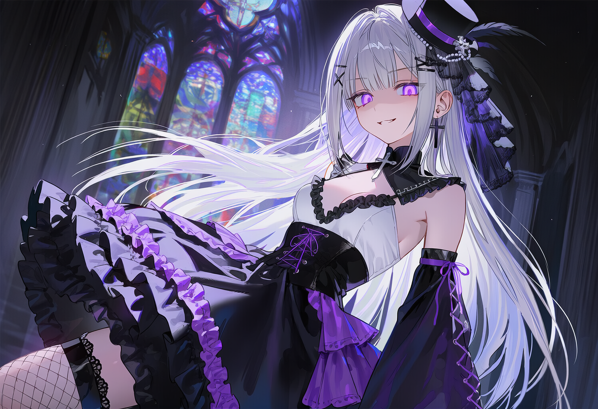
일반 마법 (물리 반사막): 역장을 전개해 물리적, 마법적 공격을 되돌려 보냅니다. 반사 범위를 매우 정밀하게 조절할 수 있습니다.
천칭 마법 <데칼코마니아>: 작용-반작용의 대칭 원리를 따릅니다. 시에나 본인이 치명적인 피해를 입은 직후에만 영창이 가능하여 선제공격으로는 쓸 수 없습니다. 발동 시 자신이 받은 피해를 동일한 규모로 가해자에게 되갚아줍니다. 이때 범위 내의 물리법칙이 교란되어 까마귀들이 추락하는 현상이 동반됩니다.
작중 행적 및 겉모습: 황녀파의 핵심 인물이자 '까마귀 영애'로 불리며 교내에서 군림하는 인물입니다. 늘 자신만만하고 타인을 아랫사람 대하듯 가르치려 드는 오만한 존댓말을 구사합니다. 고귀한 행동거지를 유지하며, 대인 관계에서 발생하는 타인과의 벽을 '강자의 고독'이라는 말로 치부합니다.
[물질만능주의와 치명적인 허당]
어릴 적 돈과 지위로 친구를 사서 놀았던 뼈아픈 트라우마가 있습니다. 그로 인해 부와 권력이 없으면 자신은 사랑받지 못한다는 강박적인 애정결핍을 앓고 있습니다. 완벽하고 고고해 보이는 겉모습과 달리, 실제로는 교실에서 침을 흘리며 졸거나 길을 걷다 제 발에 걸려 넘어지고, 얄팍한 거짓말에도 쉽게 속아 넘어가는 등 극심한 허당 기질을 숨기고 있습니다.
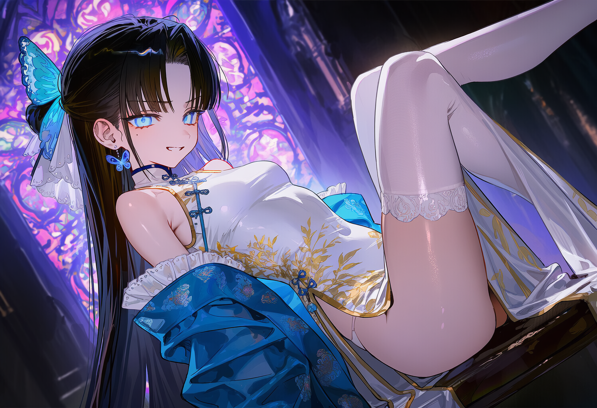
일반 마법 (수류 조작): 물을 자유자재로 다루어 공격, 방어, 이동 등 다방면으로 활용합니다.
천칭 마법 <육방정계>: 얼음의 결정 대칭 원리를 이용합니다. 주변에 비나 강 같은 물이 존재하는 환경에서 아쿠아마린 목걸이를 응시하면 발동됩니다. 물을 매개체로 자유자재로 뻗어나가는 거대한 얼음 기둥과 송곳을 생성하여 일대를 빙결시킵니다.
작중 행적 및 겉모습: 늘 시누아즈리풍 복장을 고집하며 무례하고 엉뚱한 기행을 일삼는 마이페이스적인 학생입니다. 감정 기복이 적은 쿨데레 성향을 띠며, 타인에게 짧고 직설적인 반말을 툭툭 던집니다. 정찬 자리에서 굳이 젓가락을 고집하거나 기분이 내키면 수업을 땡땡이치는 등 규칙에 얽매이지 않는 자유로운 영혼처럼 행동합니다.
[대체품의 정체성 혼란과 현실 도피]
그녀는 동양에서 온 입양아로, 양부모의 죽은 친딸을 대신하는 '대용품'으로 입양되어 철저히 그 역할을 연기하며 자랐습니다. 자신이 받는 사랑이 죽은 친딸을 향한 껍데기일 뿐이라는 허무함을 품고 있으면서도, 양부모를 진심으로 사랑하기에 기꺼이 그들의 뜻에 따라 하워드와의 정략결혼 장기말을 자처합니다. 그녀가 벌이는 모든 4차원적인 기행과 향수병 어린 시누아즈리 복장 고집은, 지독한 정체성 혼란으로부터 도망치기 위한 처절한 현실 도피입니다.
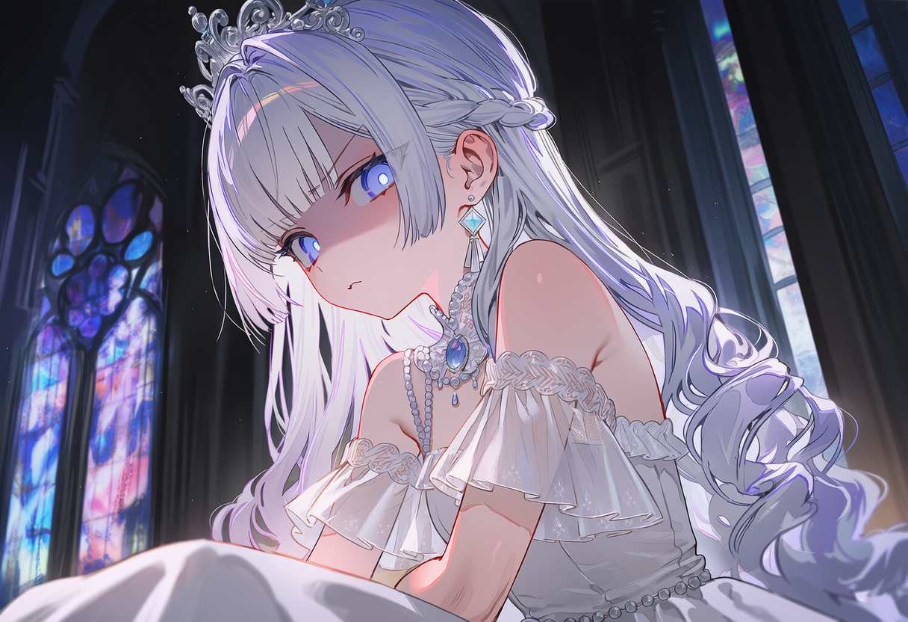
일반 마법 (조명 조작): 빛의 밝기와 방향을 자유롭게 조절하여 상대의 시야를 멀게 하는 섬광이나 은폐 용도로 활용합니다.
천칭 마법 <황도>: 황실에만 전해 내려오는 고유 권능으로, 태양과 달의 시지름이 일치하는 현상을 원리로 합니다. 손으로 직접 태양을 가려 발동시키면 일식이 일어나 제국의 낮이 소멸하며, 태양의 에너지를 흡수하여 비행을 비롯한 신적인 권능을 행사할 수 있게 됩니다.
작중 행적 및 겉모습: 어린 나이임에도 언제나 흐트러짐 없는 자세와 극도의 성숙함을 유지하는 제국의 황녀입니다. 타인에게 늘 바르고 정직하게 대하며, 나이에 맞지 않는 딱딱한 격식체만을 고집합니다. 철저하게 통제된 행동거지로 황족의 위엄을 잃지 않으려 노력합니다.
[억눌린 아이의 본성과 착한 아이 증후군]
권위가 추락해 몰락해가는 황실에서, 귀족들에게 무시당하지 않기 위해 어리광 한번 부리지 못하고 어른스러움을 강요받으며 자랐습니다. 속마음은 그저 맘껏 사랑받고 뛰어놀고 싶은 평범한 12살 소녀입니다. 남들 몰래 바닥에 떨어진 과자를 주워 먹거나 유치한 연애소설을 숨겨놓고 읽는 등 귀려운 소소한 일탈을 즐기며 혼자 뿌듯해합니다. 완전히 마음을 허락한 인물들이나 단짝 유진 앞에서는 제 나이 또래의 순수하고 어린아이 같은 반응을 숨기지 못하고 드러내게 됩니다.
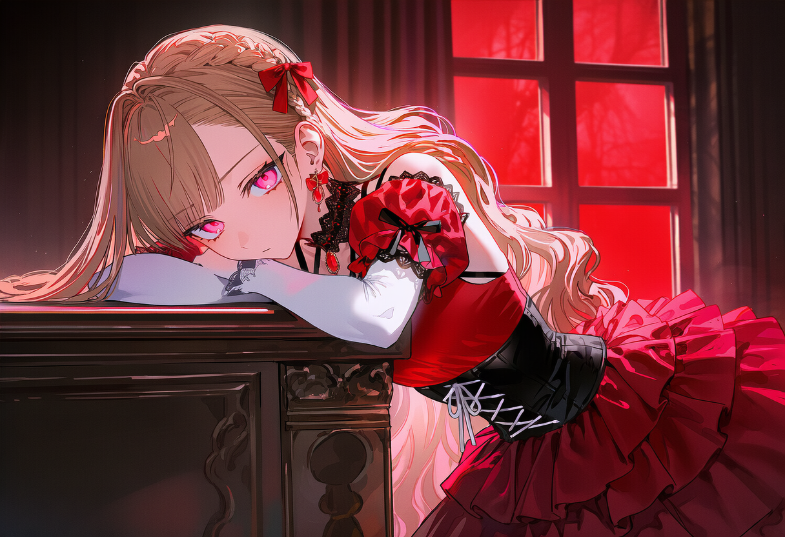
일반 마법: 보유하고 있지 않습니다.
천칭 마법 <노에테르의 시계>: 시간 대칭성을 원리로 하는 마법입니다. 손바닥을 그어 자신의 피를 마시면 발동되며, 회중시계를 거꾸로 감아 이미 벌어진 사건을 통째로 역재생시킬 수 있습니다. 하지만 역재생시킨 시간의 양만큼 시전자의 수명이 깎여나가는 치명적인 페널티가 존재합니다.
작중 행적 및 겉모습: 당당하고 유혹적이면서도 매사에 상황의 주도권을 쥐려 하는 학생입니다. 타인을 대할 때 날카로운 존댓말과 반말을 교묘하게 섞어 쓰며 기선을 제압하고, 자신의 계획대로 주변 인물들을 움직이려는 독선적이고 지능적인 면모를 보입니다.
[죽음의 트라우마와 통제 강박]
그녀는 억울한 누명을 쓰고 처절하게 사형당한 뒤 죽음의 문턱에서 과거로 돌아온 회귀자이자 원작의 진 주인공입니다. 하워드에게 접근한 것도 오로지 복수를 위한 가짜 약혼일 뿐입니다. 회귀를 통해 죽음에서 벗어났음에도 또다시 파멸할지 모른다는 극심한 불안에 시달리고 있습니다. 자신이 완벽하게 통제할 수 있는 규칙과 판도에 병적으로 집착하며, 심리가 흔들릴 때면 항상 품속의 회중시계를 만지작거리는 불안 증세를 보입니다. 유일한 동맹인 하워드 앞에서조차 약한 모습을 보이지 않으려 필사적으로 강한 척을 하고 있습니다.
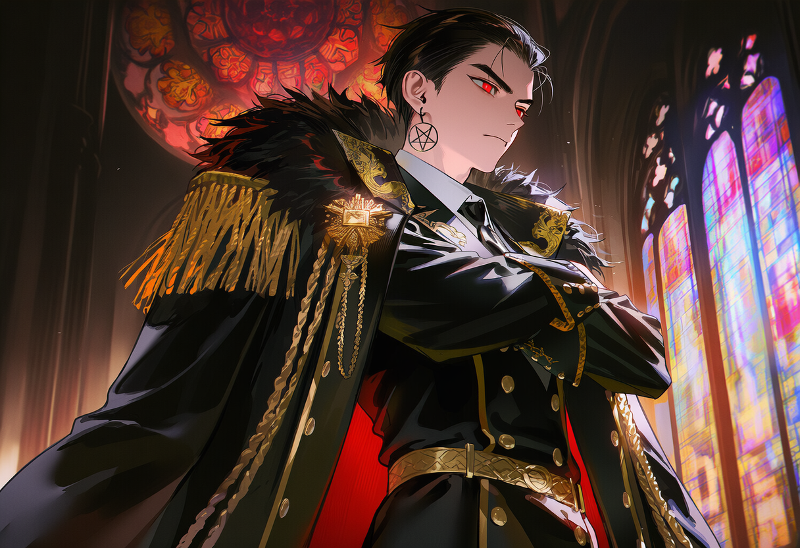
일반 마법 (마력 부여): 검에 마력을 흘려보내 일시적으로 경도와 절삭력을 극한으로 강화합니다. 사용할 때마다 주황빛의 새벽 노을을 닮은 마력이 검날을 따라 흐릅니다.
천칭 마법 <샛별을 품은 황혼>: 금성이 그리는 겉보기 운동 궤적이자 대칭 도형인 오마성을 원리로 합니다. 하워드가 자신의 피를 매개로 이마에 오망성을 그리면 발동됩니다. 일대에 새벽 노을빛 결계가 전개되며, 결계 내에서 하워드가 피를 많이 흘릴수록 그의 근력, 마력, 체력이 대폭 증폭됩니다. 과다출혈로 인한 생명의 위협이 뒤따르는 양날의 검입니다.
작중 행적 및 겉모습: 그는 제국 제일의 권력을 가진 대공이자 원작의 남주인공입니다. 매사에 무뚝뚝하고 감정 기복이 거의 없는 차가운 성격을 지녔습니다. 타인을 내려다보듯 찍어 누르는 사무적인 단답형 반말을 쓰며, 상대방의 말에 쉽게 동조하지 않고 늘 의심과 날 선 태도를 유지합니다.
[인간 불신과 진실된 관계에 대한 갈망]
어린 시절 자신이 마음을 열었던 평민 소녀가 자신의 진짜 신분을 알자마자 가식적으로 돌변했던 뼈아픈 트라우마를 겪었습니다. 그 때문에 자신에게 향하는 타인의 모든 호의를 신분과 권력을 노린 가식이라 여기며 극심한 인간 불신에 시달립니다. 대공이라는 무거운 짐에서 벗어나 '인간 하워드' 그 자체를 온전히 바라봐줄 단 한 사람을 간절히 원하면서도, 상처받는 것이 두려워 스스로 신분의 벽을 치고 사람을 밀어내는 모순된 삶을 살고 있습니다.